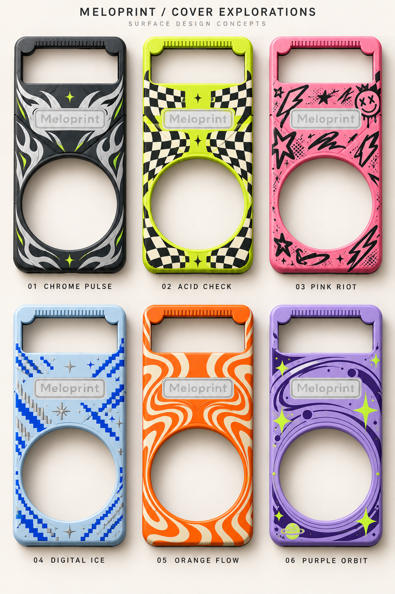

E2 · 최신 버전11부품 · 사는 건 M3×5 나사 6개뿐 · 빗이 딸깍 꽉 끼고 더 깊게 튕김 · 크랭크 핀 일체형 · 헬리컬 기어이전 버전 E1 보기 →
MELODY TO MODEL
음계를, 빗살로.
카트리지 포함 높이 약 223mm · PF2 본체 전용입니다. 기본 32음 / MW4 최대 33음입니다. 이전 모델과 호환되지 않습니다.
32 / 33 최대 음 칸72.128mm 좌우 이동2 빗살 층
PF2 E2 · 11 PRINTED PARTS · SYNC AXLE + HELICAL · ONLY 6 × M3×5 BOUGHT
전체 모델링 다운로드
E · 동기축으로 화살표가 틀어지지 않습니다. 화살표(요크) 양 끝을 한 축에 붙은 피니언 2개가 앞 레일과 23번 레일의 랙에 물려 같이 움직입니다. 좌우로 움직이는 내내 비틀림은 최대 ±0.24°(v47 ±1.54°), 빗살 물림 깊이는 0.40~0.60mm로 일정합니다. 비트는 힘을 88.6mm 떨어진 두 기어가 받으므로 서랍처럼 걸리지 않습니다. 메인기어 아래 받침 링으로 축 기울기를 2.15°에서 0.41°로 줄였습니다. 사서 쓰는 부품은 M3×5 나사 6개(상판 4·다이얼 1·레일 1)뿐이고, 나사는 출력물 구멍에 직접 박힙니다. 608 베어링 대신 베이스의 출력 축 기둥에서 손잡이 기어가 돕니다. 손잡이·메인 기어는 조용한 25° 헬리컬입니다. 화살표 대신 빗살을 튕기는 피크가 윗면까지 올라온 날개로 상판 창에서 바로 보이고, 창과 빗 사이 상판 띠를 없애 튕기는 순간이 보입니다. 요크는 뒤집어 출력해 롤러 홈과 축 받침이 수직 벽으로 정확하게 나옵니다. 크랭크 핀은 메인기어와 한 몸인 굵은 Ø6.9 핀이라 빠지거나 흔들리지 않습니다(따로 끼우는 롤러 없음). 서포트는 03 메인기어 바깥 링 아래만 필요합니다. 바뀐 부품: 01 베이스, 02 상판(상판 7종 모두), 03 메인기어(크랭크 핀 일체), 04 손잡이 기어, 05 요크(튕김 날개), 11 다이얼, 23 레일, 새 24 동기축. 06 롤러는 없어졌습니다. 10-19 빗: 실제 출력 후 빗이 헐겁고 소리가 작아서, 이미 뽑은 케이스는 그대로 두고 15·16 빗만 고쳤습니다. 아래 빗은 옆 돌기가 베이스 리브를 넘어 딸깍 걸리고, 위 빗은 돌기가 상판 벽에 0.20씩 끼여 세게 밀어야 들어갑니다. 빗 턱을 0.15 깎아 피크 쪽으로 옮겨 물림 깊이가 0.35에서 0.50으로 깊어졌습니다(음은 그대로).
v47 · 608 베어링 (이전 기록: E2에서는 출력 축 기둥으로 바뀌어 베어링을 쓰지 않습니다). 손잡이 기어 아래에 608 스케이트 베어링 하나를 넣어 다이얼이 볼베어링 위에서 부드럽게 돕니다. 기어 축은 메인기어와 같은 베이스가 잡아 맞물림 틈이 그대로 유지됩니다. 베어링 자리는 압착 리브로 출력 공차를 흡수합니다.
v46 · 출력 부품 11개. 다이얼을 M3 볼트 하나로 손잡이 기어에 조여 한 덩어리로 돌게 했습니다. 걸쇠·U자 창이 없는 통짜 원판이라 세게 돌려도 비틀리거나 빠지지 않습니다. 빗은 레일 패드와 압착 리브로 좌우·위아래 유격 없이 고정됩니다. 롤러 클립(12번)은 필요 없어 뺐습니다.
v45 · 케이스 락 4개를 M3 나사로 교체. 상판 네 모서리를 M3×20 육각 렌치 볼트(DIN 912) 4개와 M3 너트 4개로 고정합니다. 너트는 베이스 바닥의 육각 홈에 넣고, 나사는 상판 위에서 2.5mm 렌치로 조입니다. 출력 부품은 12개입니다. 상판 7종 모두 나사 머리가 윗면보다 0.9mm 들어가 있고, 장식은 그대로입니다.
v44 · 화살표 뒤쪽 아래 가이드 추가 (23번 레일). v43은 화살표 뒤쪽을 아래에서 받치는 부품이 없어 최대 1.25° 처지고 상판 중앙 가이드에 걸릴 수 있었습니다. 23번 레일(핀 2개로 베이스에 꽂음)이 뒤쪽 가로대를 받쳐 처짐을 0.001°로 줄입니다. 함께 바뀐 부품: 01 베이스 핀 구멍 2개, 04 손잡이 기어 백래시 0.093→0.147mm, 05 화살표 롤러 홈 한쪽 0.25→0.15mm. 외형·화살표·빗살·상판 7종은 그대로입니다.
잘 보이는 14 × 18mm 화살표 · 작은 동기화 부품 4개 제거. PF1의 19개에서 15개로 줄였고, v44에서 화살표 가이드 레일 1개를 더했고, v45에서 케이스 락 4개를 M3 나사로, v46에서 롤러 클립을 없애 11개, E에서 24번 동기축을 더하고 06 롤러를 메인기어에 합쳐 출력 부품은 11개입니다. 몸체 크기와 이동량 72.128mm는 유지합니다. 작은 클립은 메인기어용 1개만 남았습니다.
현재 설정 ZIP·메시 3DM에는 선택 상판, 멜로디, 빗 방식과 물림 깊이가 반영됩니다. 서피스 3DM은 기본 상판·0.35mm 고정 샘플 (MW4 선택: 33음 / 나머지 선택: 현재형 생일축하)입니다. 출력 부품 11개의 닫힌 서피스 솔리드와 M3×5 나사(별도 레이어)가 들어 있습니다(Rhino 7 형식, 출력 부품 면 수 일반 3,184 / MW4 2,825). 사용자 빗의 서피스는 아래 ‘라이노 서피스 생성’을 이용하세요.
v43 잠금형 빗: 01 베이스·02 상판·15/16 빗을 함께 교체하세요. 이전 몸체와 혼용할 수 없습니다. 화살표를 좌우 끝으로 옮긴 다음 두 빗을 맞춰 제품 위쪽 입구에서 아래로 끝까지 밀어 잠급니다. 분리는 상판을 열고 양쪽 걸쇠를 안쪽으로 누릅니다. 치수상 위쪽 이동 여유는 0.05mm이며 실물 삽입력·내구성은 미검증입니다.
PF2 조립·출력 안내와 고정 샘플
v40 이하 PF2 출력물에서는 01·03·04·06·11·22번을 v41로 교체합니다. v43은 R2 창 모서리를 유지하고 빗 삽입 통로와 잠금턱을 변경했습니다. 화살표는 유지합니다. 11번은 기존 작은 클립이 아니라 마지막에 끼우는 큰 손잡이 원판입니다. 이전 CG1/RevJ 구동부와 혼용하지 마세요. E는 동기축과 두 랙이 화살표를 정렬하고, 상판이 화살표가 들리지 않게 위를 막으므로 상판을 닫고 사용합니다. v43 몸체로 교체한 이후에는 15·16 두 판을 함께 교체합니다.
E 조립 순서: 축 기둥에 그리스를 조금 바르고 04 기어를 베이스 축 기둥에 끼움 → 03 메인기어·10 클립 → 23 레일 핀 2개를 베이스 구멍에 꽂은 뒤, 베이스를 옆으로 세워 바닥에서 M3×5으로 고정(나사가 레일에 직접 박힘) → 크랭크를 약 45°로 돌리고 크랭크 핀에 그리스를 조금 바름 → 24 동기축을 두 랙 위에 올려 크랭크 핀 바로 위로 굴림 → 05 요크를 위에서 내려 축 위에 얹음 → 요크를 가운데 두고 02 상판, M3×5 4개(베이스 모서리 기둥에 직접 박힘) → 11 다이얼을 육각에 끼우고 M3×5로 조임 → 요크를 끝으로 옮기고 15 아래 빗을 뒤에서 꾹 밀어 딸깍 두 번 걸리게, 16 위 빗도 세게 밀어 넣음. 빗을 뺄 때는 나사 4개를 풀고 상판을 엽니다. 05 요크는 뒤집어서(윗면이 바닥), 23 레일은 빗 반대쪽 긴 면을 바닥에, 24 동기축은 뒤 링을 바닥에 세워(브림 8~10mm) 출력합니다. 서포트는 03 메인기어 바깥 링 아래만 필요합니다.
v41: 아래 기어 → 상판 → 위 손잡이 순으로 조립합니다. 새 손잡이 걸쇠는 동봉 시험편으로 먼저 확인하세요. 서포트가 필요한 부위가 있습니다. 먼저 동봉된 가이드 시험편으로 출력 공차를 확인하세요. 검사 결과는 CAD 형상 기준이며 실제 마찰·내구성·음질은 시험 전입니다. 디자인 상판은 PF2 가이드와 화살표 이동 공간을 유지하도록 갱신했습니다.
PF2 상판 · 기본 + 디자인 6종
기본 PF2 상판과 기존 디자인 6종입니다. 중앙 가이드·조립부·화살표 창을 PF2에 맞췄습니다. 모델을 고르면 바로 다운로드할 수 있습니다.
원본 디자인 시안 보기

다운로드되는 모델의 정면도입니다. 디자인형은 기존 로고와 장식을 유지하고 PF2 결합부와 하나로 합쳤습니다. 화살표 주변은 장식을 비워 이동 공간을 확보했습니다. 장식 높이 0.40mm. 얇은 조각과 작은 구멍을 정리한 출력용 모델입니다. 색상·금속 질감은 출력 재료와 도색에 따라 달라집니다.
카드는 실제 생성 형상의 빗살 한 개를 확대한 모습입니다. 네 방식에 같은 목표 음계·배치를 사용합니다. 키다·팅커비트 참고형은 원본 치수를 확인하지 못한 독립 비교용 형상이며 정확한 복제품이 아닙니다. 실제 음정은 각 방식의 출력물로 보정해야 합니다. 방식을 바꾸면 실측 확인이 해제됩니다.
방식별 위·아래 STL 2개씩, 총 8개와 라이노 생성 파일·SCAD·설정 포함. 한 방식의 두 판만 함께 조립하세요. 범위를 벗어나는 방식은 제외하고 안내문을 넣습니다. 33음은 MW4만 지원합니다.